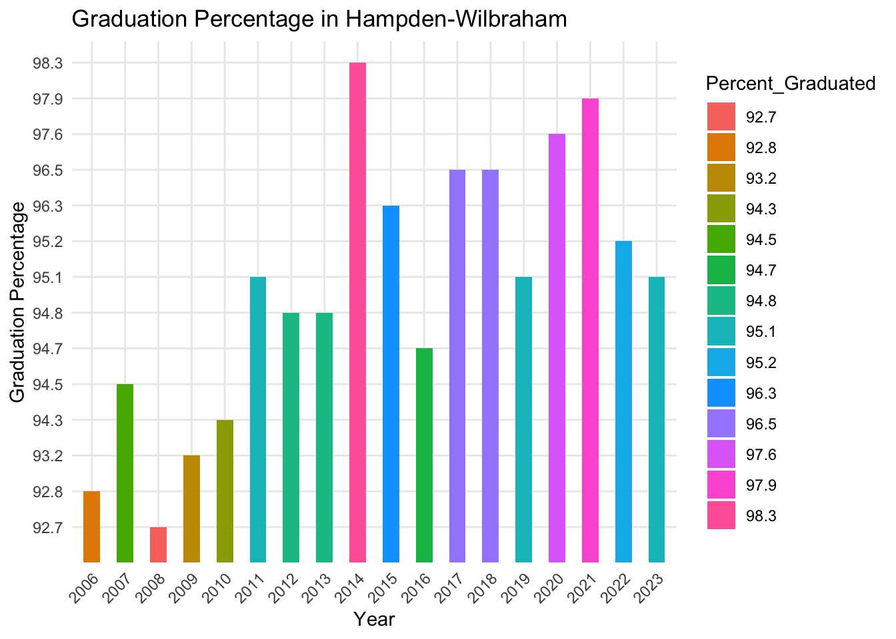
Data
We describe the sources of our data and the cleaning process.
.jpg)
Datasources
Dataset 1: Massachusetts District Data
Source
This dataset, provided by the Massachusetts Department of Education and Secondary Education, offers comprehensive, state-level education statistics. It includes data on student enrollment, academic performance, graduation rates, and demographics of the student body. It offers district-level information spanning 18 years (2006–2023). The data was compiled to guide educational improvement and support policies and programs. To ensure consistency across this panel, we standardized district names and aligned year columns before merging graduation data with enrollment figures for each year. Additionally, SAT performance data was incorporated by matching district and year, with SAT scores appended only where districts already existed in the core panel. Empty cells were replaced with the placeholder “nil” to maintain clarity during downstream processing.
Layout
The main variables focused on in this dataset were demographics of the student body. In total there are 24 unique variables, of these 7 are very infulential to our research.
- Year: Year
- District Name: Name of each school district
- Perecent_Graduated: Graduation rates for the given school district in each year
- 2 Main Race variables:
- Perecent_Black: Percentage of student body that identifies as being Black
- Percent_White: Percentage of student body that identifies as being White
- SAT_Reading_Writing_Mean_Score: Average Reading and Writing SAT score for school district in a given year
- SAT_Math_Mean_Score: Average Math SAT score for school district in a given year
- Low_Income_Percent: Indicates the proportion of students enrolled who come from economically disadvantaged backgrounds, based on state or federal criteria.
Cleaning Processs
The code executes the following operations:
- Loads the data from
final_merged_no_charter.csvlocated in the dataset directory. - Removes all Technical, Vocational, Agricultural, and Virtual schools from the dataset.
- Changed ‘nil’ values to 0
- Rearranges the dataset to list schools by district alphabetically and by year.
- Recodes the variable names to be easier to understand and work with.
- Saves the cleaned dataset to
massachusetts_district_data.rdsin the dataset directory.
Some things to note, all charter, technical, vocational, agricultural, and virtual schools were removed from the dataset. When combining this dataset with another it felt prudent to remove charter schools as people from outside the school district can attend these schools. Likewise other school types that weren’t strictly public were removed to make the combination process more efficient.
Dataset Visualizations
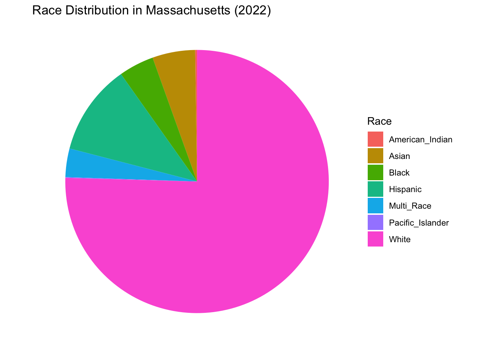
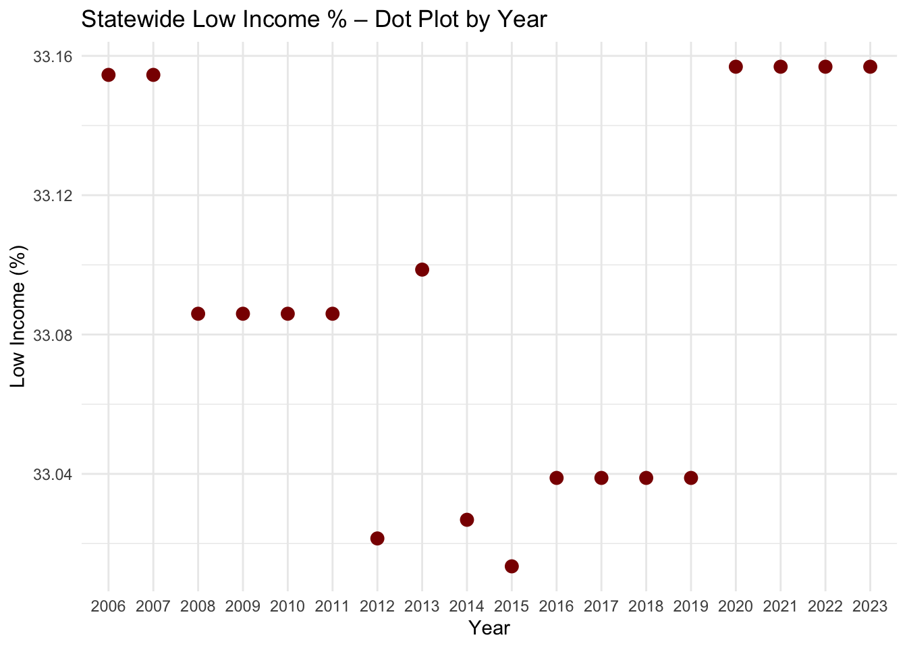
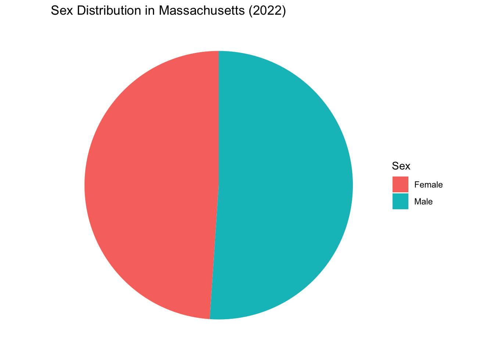
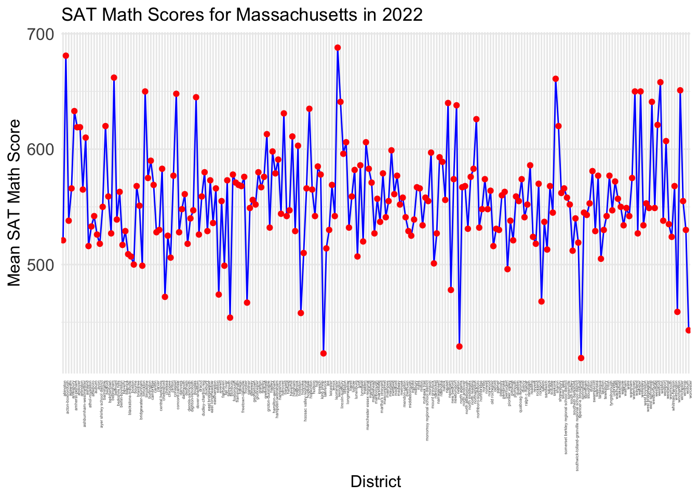
Dataset 2: Massachusetts Per Pupil Expenditure
Source
This dataset is also provided by the Massachusetts Department of Education and Secondary Education. It provides data and analysis related to per-pupil expenditures, the amount of money spent per student, across school districts in Massachusetts. Per-pupil expenditures are calculated by dividing a district’s operating costs by its average pupil membership (FTEs), including in-district expenditures per pupil and total expenditures per pupil, which include in-district and out-of-district spending and enrollment. This data helps policymakers, educators, and the public compare spending patterns and evaluate how educational funds are allocated and used across the state.
Layout
This data set contains 9 variables of which 4 are influential to our study.
-Year: Year -District Name: Name of each school district -Total_Expenditures: Total expenditures for each school district per year -Total_Expenditures_Per_Pupil: Total expenditures per student for each school district per year.
Cleaning Processs
The code executes the following operations:
- Set up and locate files in the dataset directory, Filters to include only files with names like
PerPupilExpenditures_YYYY.rds. - Makes the first row the column names, then drops first row.
- Filters out Charter, Vocational, and Technical schools as well as state totals.
- Ensures a consistent layout for year.
- Renames columns for consistency with dataset 1.
- Saves the cleaned dataset to
PerPupilExpenditures_combined_filtered.rdsin the dataset directory.
One thing to note is the datasets were individual per year and had to be combined into one larger dataset that had all years instead of being separate. #### Dataset Visualizations
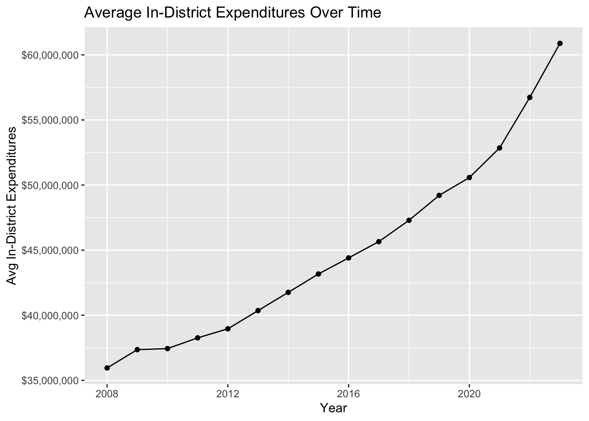
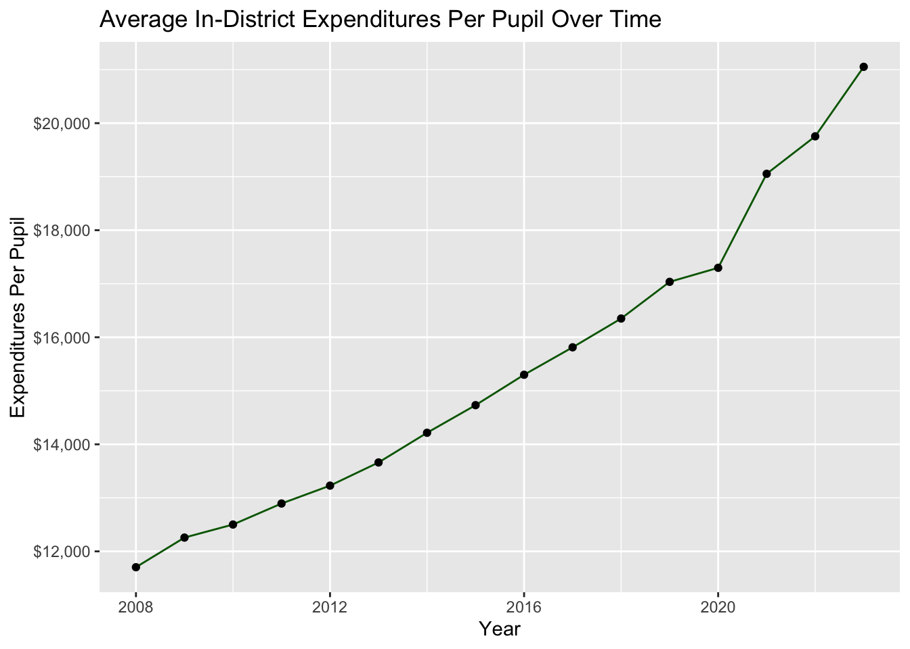
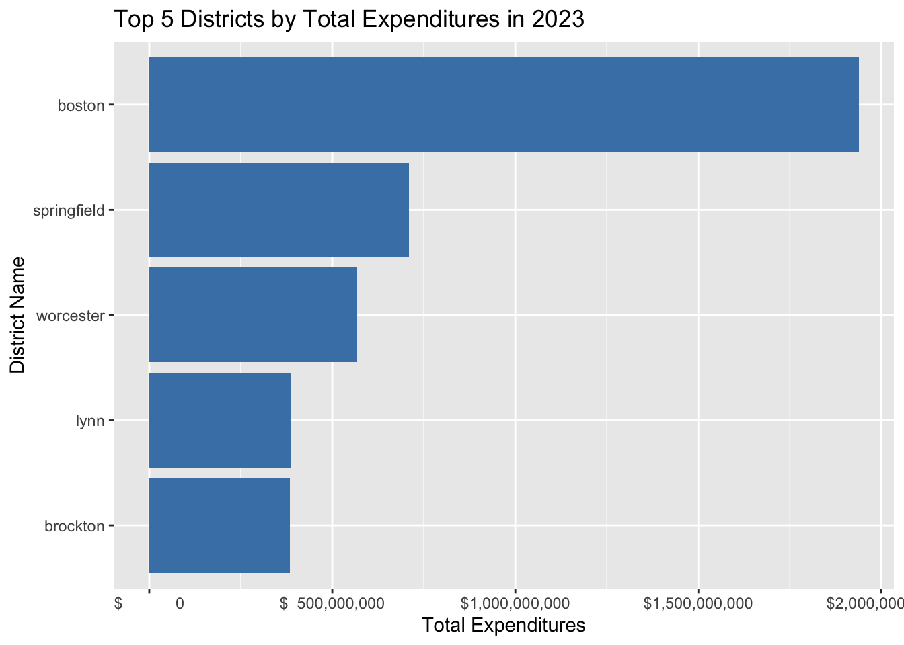
Merged Dataset
The merged dataset combines all variables from massachusets_district_data.rds and PerPupilExpenditures_combined_filtered.rds.
Merging the data
The code executres the following operations:
- Loads the datasets
massachusets_district_data.rdsandPerPupilExpenditures_combined_filtered.rdsfrom the dataset directory - Cleans data in
massachusets_district_data.rdsConverts the “District Name” column to lowercase (tolower()) to ensure uniformity in case sensitivity. Converts the “Year” column to an integer (as.integer()) to make sure it’s in a proper numeric format for analysis. - Cleans the
PerPupilExpenditures_combined_filtered.rdsto convert “District Name” to lower case and “Year” to be an integer. - Deletes one of the District Code columns.
- Merges the datasets and saves them to the dataset directory.
Data Visulizations
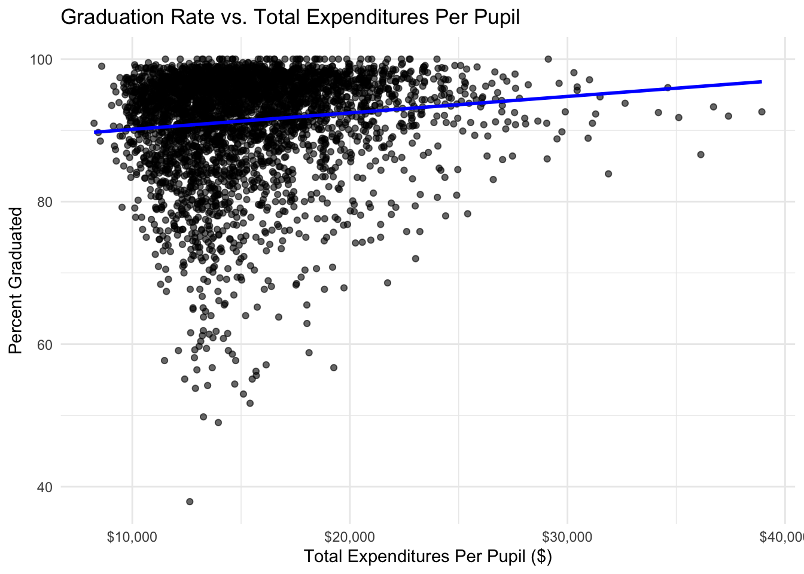
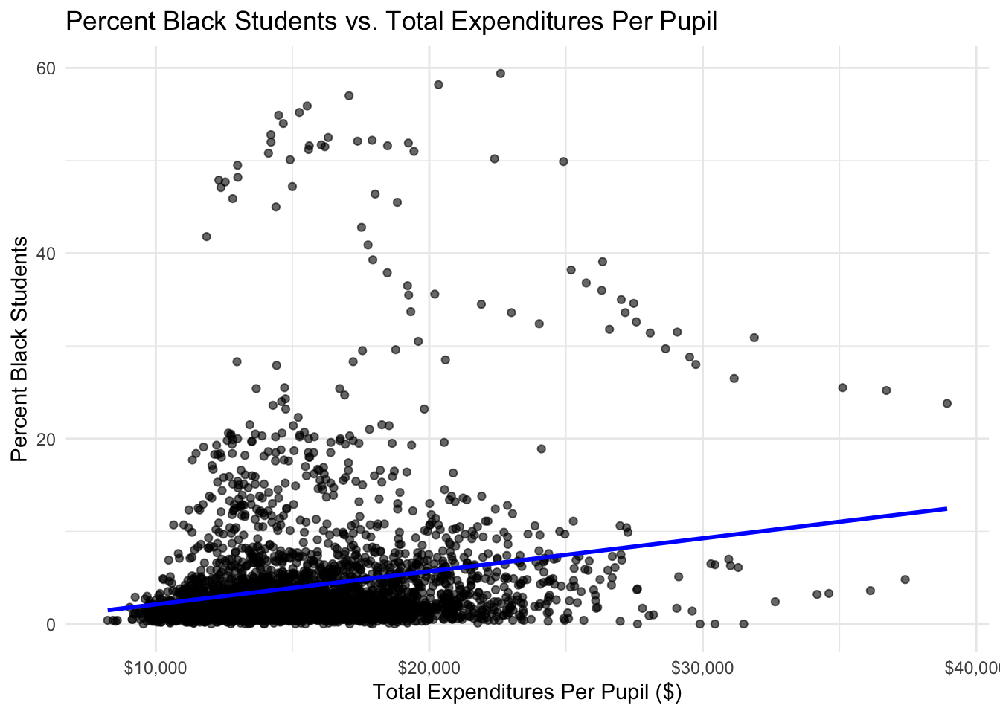
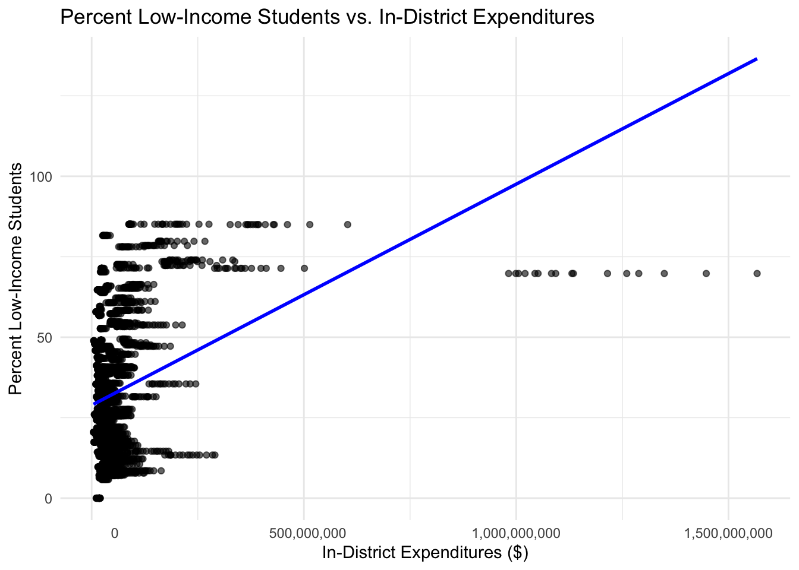